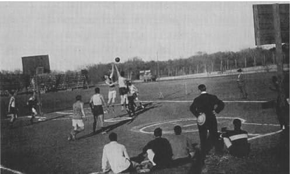
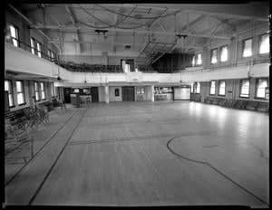
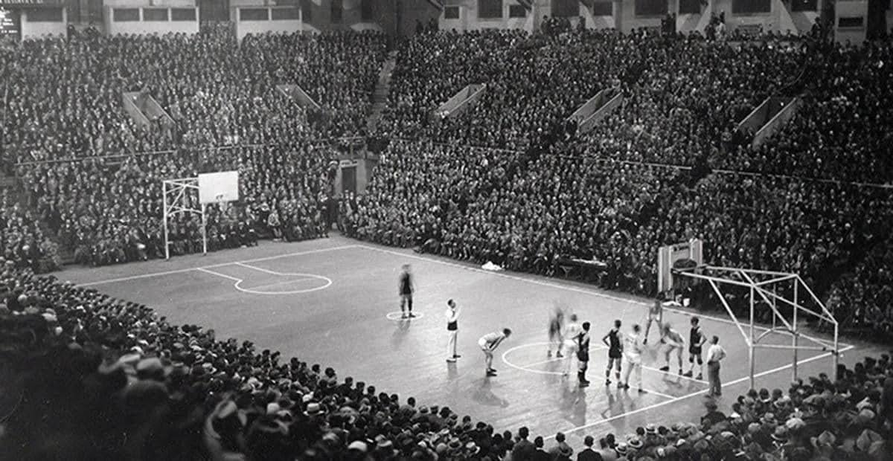
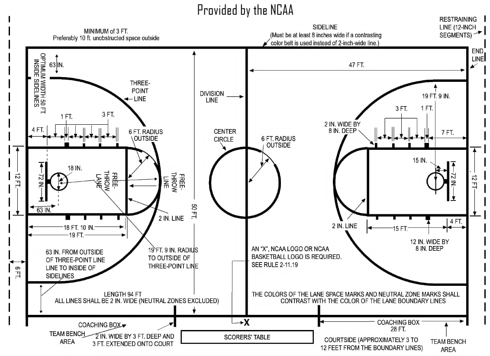

კალათბურთის მოედნის ევოლუცია.

კალათბურთის მოედნების ადრეული დღეები
კალათბურთის ადრეულ დღეებში თამაში სხვადასხვა ზედაპირზე იმართებოდა.
იშვიათი არ იყო თამაშების ნახვა ბალახიან მინდვრებზე, ჭუჭყიან ადგილებში ან თუნდაც ქვაფენილ ქუჩებზე.
თუმცა, როგორც სპორტის პოპულარობა იზრდებოდა, გაჩნდა საჭიროება დანიშნულ სათამაშო მოედნებზე,
\რომელიც მოერგებოდა თამაშის სწრაფ ტემპს. ამან განაპირობა უფრო სტრუქტურირებული კალათბურთის მოედნების განვითარება.

გადასვლა ბეტონის ფილებზე
მას შემდეგ, რაც კალათბურთი მოიპოვა მიმზიდველობა და გახდა ორგანიზებული სპორტი,
უფრო სტანდარტიზებული სათამაშო ზედაპირის საჭიროება აშკარა გახდა. ამან გამოიწვია ჭუჭყისა და
ხრეშიდან ბეტონის ფილებზე გადასვლა. ბეტონმა შესთავაზა დონის და მყარი ზედაპირი მოთამაშეებისთვის
თავიანთი უნარების გამოვლენისთვის. ეს უზრუნველყოფდა უკეთეს წევას, რაც აადვილებდა მიმართულების
შეცვლას და ზუსტი მოძრაობების შესრულებას.
ბეტონის კორტები ნორმად იქცა ბევრ თემში და ისინი მნიშვნელოვანი გაუმჯობესება იყო
წინა იმპროვიზირებული ზედაპირებთან შედარებით. თუმცა, მათ მაინც ჰქონდათ შეზღუდვები.
ბეტონი შეუბრალებელი იყო და მყარ ზედაპირზე დაცემამ შეიძლება გამოიწვიოს დაზიანებები.
უფრო მეტიც, შოკის შთანთქმის ნაკლებობა აწვება მოთამაშეთა სახსრებს, რაც იწვევს ჯანმრთელობის გრძელვადიან პრობლემებს.

მიღწევები კალათბურთის მოედნის მასალებში
ბოლო ათწლეულების განმავლობაში, სინთეტიკური ზედაპირები სულ უფრო პოპულარული გახდა კალათბურთის მოედნების მშენებლობაში.
ეს ზედაპირები, როგორც წესი, დამზადებულია რეზინის ან პოლიურეთანისგან და გთავაზობთ უამრავ უპირატესობას ტრადიციულ მასალებთან
შედარებით. სინთეტიკური კორტები უზრუნველყოფს შოკის შესანიშნავ შთანთქმას, ამცირებს ტრავმების რისკს და მინიმუმამდე
ამცირებს დატვირთვას მოთამაშეთა სახსრებზე. ისინი ასევე გვთავაზობენ ბურთის თანმიმდევრულ გადმოცემას და შესანიშნავ წევას,
რაც საშუალებას იძლევა ზუსტი მოძრაობები და მიმართულების სწრაფი ცვლილებები.
სინთეზური ზედაპირების ერთ-ერთი მთავარი უპირატესობა მათი მრავალფეროვნებაა.
მათი მორგება შესაძლებელია შესრულების სპეციფიკური მოთხოვნების დასაკმაყოფილებლად,
როგორიცაა შოკის შთანთქმა, ბურთის ამოსვლა და თამაშის სიჩქარე. ეს საშუალებას აძლევს მოთამაშეებს
ჰქონდეთ უფრო მორგებული გამოცდილება, მათი სათამაშო სტილისა და პრეფერენციების მიხედვით. გარდა ამისა,
სინთეზური ზედაპირები უაღრესად გამძლეა და საჭიროებს მინიმალურ მოვლას, რაც მათ ეკონომიკურ არჩევანს ხდის
მრავალი ორგანიზაციისთვის.

დღევანდელი სტანდარტული მოედნები
კალათბურთის სათამაშოდ იყენებენ მოედანს, რომლის ზომაა 28X15 მ.
პირითი ხაზების შუა ადგილას სპეციალურ დგარებში დაყენებულია ფარები,
რომლებზეც დამაგრებულია ლითონის რგოლებზე დაკიდებული უძირო ბადეები (კალათები).
მანძილი იატაკსა და კალათს შორის 305 სმ-ია, თვითონ ფარის ზომებია 180X105 სმ ან 120X80 სმ,
ასევე არსებობს ქუჩის კალათბურთის ფარი და სამოყვარულო კალათბურთის ფარი, რომლის ზომებიც განსხვავებულია.
კალათის დიამეტრი 45 სმ-ია. ფარის წინ 625-ანი რადიუსით შემოსაზღვრულია 3-ქულიანი ტყორცნის არე და საჯარიმო ზონა.
მოთამაშეთა რაოდენობა ყოველ გუნდში 5-5 კაცით განისაზღვრება. თამაშის დროს ჩაგდებული ბურთისათვის გუნდს ერიცხება 2 ან 3 ქულა,
ყოველი რეალიზებული საჯარიმო ტყორცნისათვის 1 ქულა, გამარჯვებულია ის გუნდი, რომელიც მეტ ქულას დააგროვებს. შეხვედრა შედგება
ოთხი 10-წუთიანი (სუფთა დრო) მეოთხედისგან. მეოთხედებს შორის შესვენება 2 წუთია. გამონაკლისია შესვენება მეორე და მესამე მეოთხედებს
შორის,
რომელიც 15 წუთი გრძელდება.
